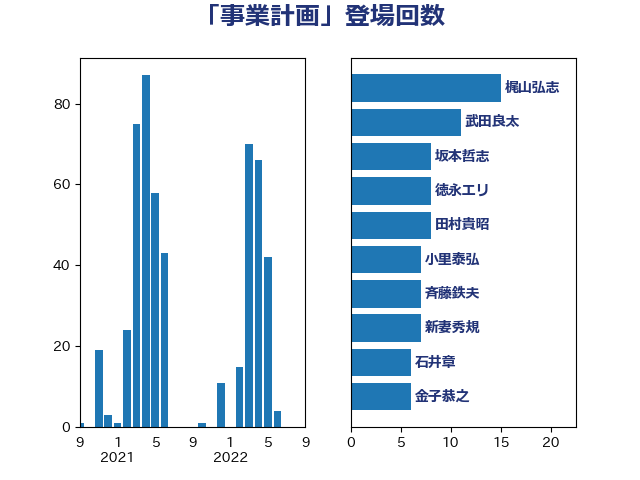

単語「事業計画」

| 梶山弘志 | 自由民主党 | 15 回 |
| 武田良太 | 自由民主党 | 11 回 |
| 坂本哲志 | 自由民主党 | 8 回 |
| 徳永エリ | 立憲民主党 | 8 回 |
| 田村貴昭 | 日本共産党 | 8 回 |
| 小里泰弘 | 自由民主党 | 7 回 |
| 斉藤鉄夫 | 公明党 | 7 回 |
| 新妻秀規 | 公明党 | 7 回 |
| 石井章 | 日本維新の会 | 6 回 |
| 金子恭之 | 自由民主党 | 6 回 |
| 後藤茂之 | 自由民主党 | 5 回 |
| 江島潔 | 自由民主党 | 5 回 |
| 石井正弘 | 自由民主党 | 5 回 |
| 野上浩太郎 | 自由民主党 | 5 回 |
| 山下芳生 | 日本共産党 | 4 回 |
| ながえ孝子 | 無所属 | 3 回 |
| 佐藤啓 | 自由民主党 | 3 回 |
| 宗清皇一 | 自由民主党 | 3 回 |
| 小宮山泰子 | 立憲民主党 | 3 回 |
| 平木大作 | 公明党 | 3 回 |
| 片山さつき | 自由民主党 | 3 回 |
| 矢倉克夫 | 公明党 | 3 回 |
| 萩生田光一 | 自由民主党 | 3 回 |
| 長坂康正 | 自由民主党 | 3 回 |
| 中野洋昌 | 公明党 | 2 回 |
| 井上哲士 | 日本共産党 | 2 回 |
| 宮崎雅夫 | 自由民主党 | 2 回 |
| 小林鷹之 | 自由民主党 | 2 回 |
| 小沼巧 | 立憲民主党 | 2 回 |
| 小泉進次郎 | 自由民主党 | 2 回 |
| 山崎誠 | 立憲民主党 | 2 回 |
| 山本博司 | 公明党 | 2 回 |
| 山添拓 | 日本共産党 | 2 回 |
| 岡本あき子 | 立憲民主党 | 2 回 |
| 枝野幸男 | 立憲民主党 | 2 回 |
| 武部新 | 自由民主党 | 2 回 |
| 河野義博 | 公明党 | 2 回 |
| 源馬謙太郎 | 立憲民主党 | 2 回 |
| 玉木雄一郎 | 国民民主党 | 2 回 |
| 田名部匡代 | 立憲民主党 | 2 回 |
| 田村まみ | 国民民主党 | 2 回 |
| 田村憲久 | 自由民主党 | 2 回 |
| 石原宏高 | 自由民主党 | 2 回 |
| 石川博崇 | 公明党 | 2 回 |
| 緑川貴士 | 立憲民主党 | 2 回 |
| 美延映夫 | 日本維新の会 | 2 回 |
| 赤羽一嘉 | 公明党 | 2 回 |
| 金子恵美 | 立憲民主党 | 2 回 |
| 青柳仁士 | 日本維新の会 | 2 回 |
| 高橋光男 | 公明党 | 2 回 |
| 高野光二郎 | 自由民主党 | 2 回 |
| 上川陽子 | 自由民主党 | 1 回 |
| 上田清司 | 国民民主党 | 1 回 |
| 下野六太 | 公明党 | 1 回 |
| 中司宏 | 日本維新の会 | 1 回 |
| 中野英幸 | 自由民主党 | 1 回 |
| 伊波洋一 | 無所属 | 1 回 |
| 佐々木さやか | 公明党 | 1 回 |
| 佐藤英道 | 公明党 | 1 回 |
| 勝俣孝明 | 自由民主党 | 1 回 |
| 吉川赳 | 無所属 | 1 回 |
| 坂本祐之輔 | 立憲民主党 | 1 回 |
| 堀井巌 | 自由民主党 | 1 回 |
| 塩川鉄也 | 日本共産党 | 1 回 |
| 安達澄 | 無所属 | 1 回 |
| 室井邦彦 | 日本維新の会 | 1 回 |
| 宮本周司 | 自由民主党 | 1 回 |
| 宮本岳志 | 日本共産党 | 1 回 |
| 宮本徹 | 日本共産党 | 1 回 |
| 小倉將信 | 自由民主党 | 1 回 |
| 小林茂樹 | 自由民主党 | 1 回 |
| 小沢雅仁 | 立憲民主党 | 1 回 |
| 小西洋之 | 立憲民主党 | 1 回 |
| 山口壯 | 自由民主党 | 1 回 |
| 山田賢司 | 自由民主党 | 1 回 |
| 岡田克也 | 立憲民主党 | 1 回 |
| 岩渕友 | 日本共産党 | 1 回 |
| 平口洋 | 自由民主党 | 1 回 |
| 庄子賢一 | 公明党 | 1 回 |
| 森山浩行 | 立憲民主党 | 1 回 |
| 沢田良 | 日本維新の会 | 1 回 |
| 浜口誠 | 国民民主党 | 1 回 |
| 浜田聡 | NHK党 | 1 回 |
| 清水真人 | 自由民主党 | 1 回 |
| 田村智子 | 日本共産党 | 1 回 |
| 石川香織 | 立憲民主党 | 1 回 |
| 礒崎哲史 | 国民民主党 | 1 回 |
| 神津たけし | 立憲民主党 | 1 回 |
| 福島伸享 | 無所属 | 1 回 |
| 穂坂泰 | 自由民主党 | 1 回 |
| 笹川博義 | 自由民主党 | 1 回 |
| 紙智子 | 日本共産党 | 1 回 |
| 舟山康江 | 国民民主党 | 1 回 |
| 若松謙維 | 公明党 | 1 回 |
| 藤岡隆雄 | 立憲民主党 | 1 回 |
| 藤巻健太 | 日本維新の会 | 1 回 |
| 西岡秀子 | 国民民主党 | 1 回 |
| 西銘恒三郎 | 自由民主党 | 1 回 |
| 谷川とむ | 自由民主党 | 1 回 |
| 近藤和也 | 立憲民主党 | 1 回 |
| 道下大樹 | 立憲民主党 | 1 回 |
| 長友慎治 | 国民民主党 | 1 回 |
| 長峯誠 | 自由民主党 | 1 回 |
| 階猛 | 立憲民主党 | 1 回 |
| 青木愛 | 立憲民主党 | 1 回 |